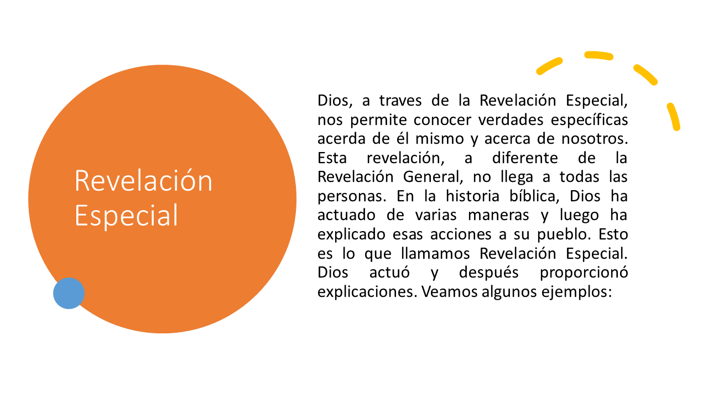
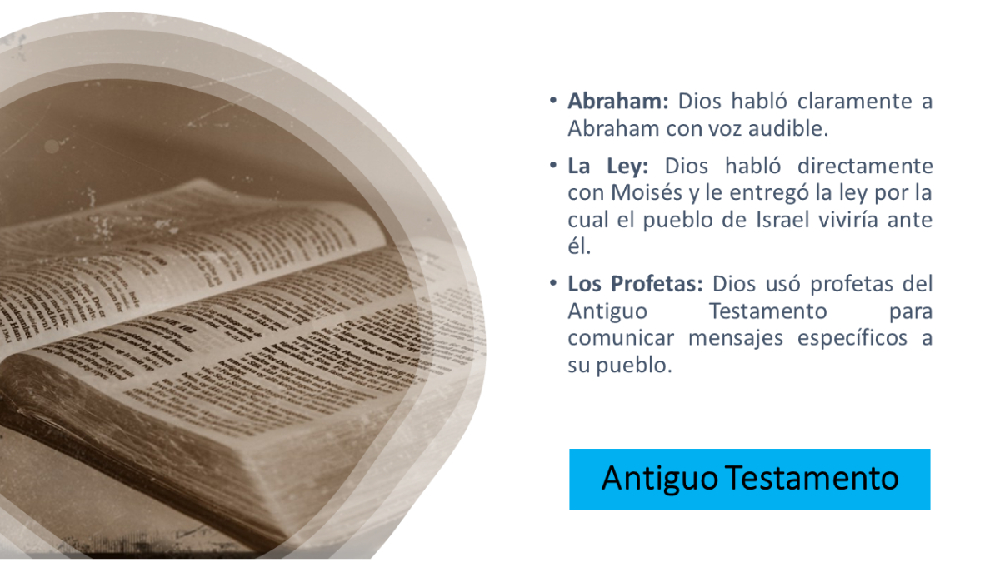
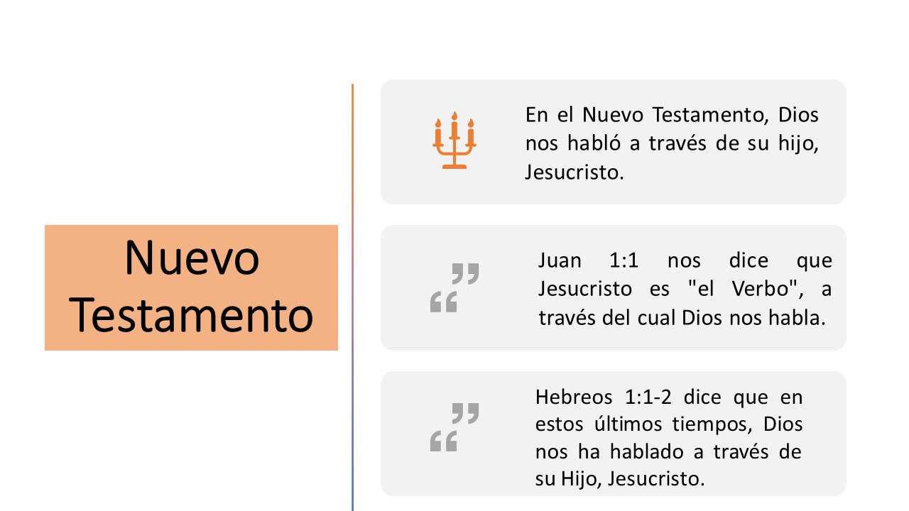
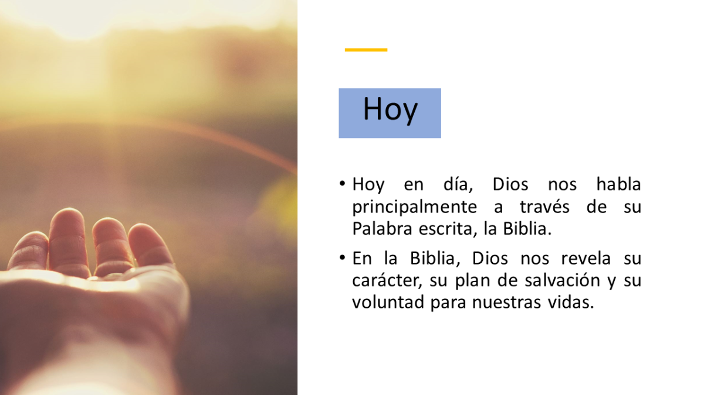
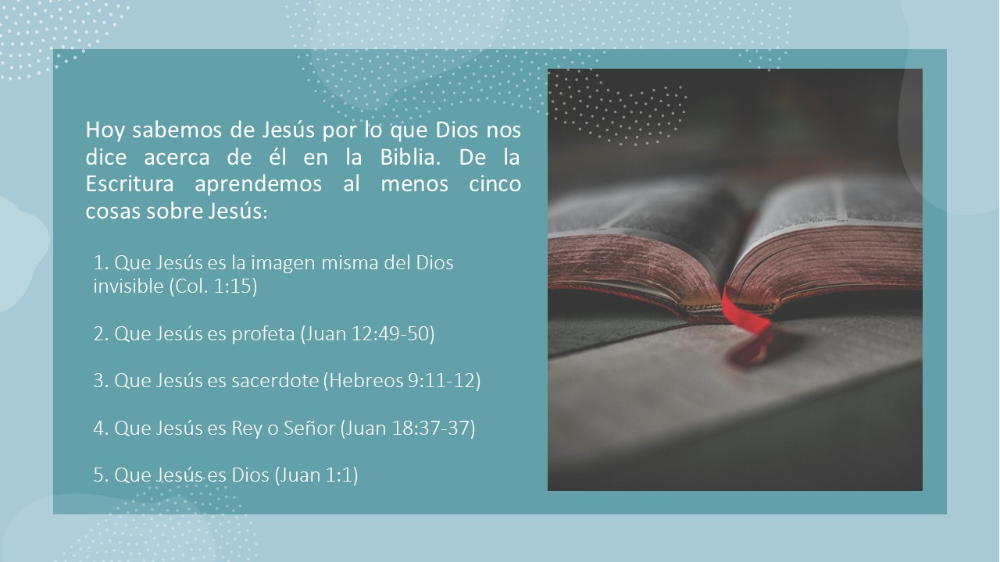

Encuentro con Dios
Revelación Especial




Reflexión
¿Qué hay de hoy? ¿Escuchamos la voz audible de Dios hoy de la misma manera que Abraham y Moisés lo hicieron?
Obra publicada con Licencia Creative Commons Reconocimiento Compartir igual 4.0